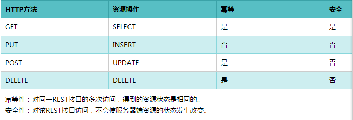

RESTful API

Rest
- Representational State Transfer : 表述性状态转变
- 它首次出现在2000年Roy Fielding的博士论文中,Roy Fielding是HTTP规范的主要编写者之一.他在论文中提到：”我这篇文章的写作目的，就是想在符合架构原理的前提下,理解和评估以网络为基础的应用软件的架构设计,得到一个功能强、性能好、适宜通信的架构
- REST指的是一组架构约束条件和原则.如果一个架构符合REST的约束条件和原则,我们就称它为RESTful架构
RESTful
- RESTful是一种常见的REST应用,是遵循REST风格的web服务,REST式的web服务是一种ROA(面向资源的架构)
- 它使用典型的HTTP方法,诸如GET,POST.DELETE,PUT来实现资源的获取,添加,修改,删除等操作.即通过HTTP动词来实现资源的状态扭转

HTTP响应状态码
根据http响应码,判断请求状态,进而做出提醒
Mapping详解
Mapping是ES中的一个很重要的内容,它类似于传统关系型数据库中的Table的Schema,用于定义一个索引(Index)的某个类型(Type)的数据的结构
在ES中,我们无需手动创建type和mapping.在默认配置下,ES可以根据插入的数据自动地创建type及其mapping,也可以通过配置文件关闭ES的自动创建mapping功能
mapping中主要包括字段名,字段数据类型和字段索引类型这三个方面的定义
字段名: 与传统数据库字段名作用一样,就是给字段起个唯一的名字,好让系统和用户能识别
字段数据类型: 定义该字段保存的数据的类型,不符合数据类型定义的数据不能保存到ES中
ES所支持的数据类型
| 数据类型大类 | 数据类型小类 |
|---|---|
| String | string |
| Whole number | byte,short,integer,long |
| Floating point | float,double |
| Boolean | boolean |
| Date | date |
字段索引类型: 索引是ES中的核心,ES之所以能够实现实时搜索,完全归功于Lucene这个优秀的Java开源索引.在传统数据库中,如果字段上建立索引,我们仍然能够以它作为查询条件进行查询,只不过查询速度慢点.而在ES中,字段如果不建立索引,则就不能以这个字段作为查询条件来搜索
mapping中string类型字段可以配置的索引类型
| 索引类型 | 解释 |
|---|---|
| analyzed | 首先分析这个字符串,然后再建立索引.换言之,以全文形式索引此字段 |
| not_analyzed | 索引这个字段,使之可以被搜索,但是索引内容和指定值一样.不分析此字段 |
| no | 不索引这个字段.这个字段不能被搜索到 |
如果索引类型设置为analyzed,在表示ES会先对这个字段进行分析(一般来说,就是自然语言中的分词)
Elasticsearch RESTful API使用
查看集群健康信息
curl -XGET "localhost:9200/_cat/health?v"
返回结果:
| epoch | timestamp | cluster | status | node.total | node.data | shards | pri | relo | init | unassign | pending_tasks | max_task_wait_time | active_shards_percent |
|---|---|---|---|---|---|---|---|---|---|---|---|---|---|
| 1575537821 | 09:23:41 | HengheElasticsearch | green | 2 | 2 | 10 | 5 | 0 | 0 | 0 | 0 | - | 100.0% |
结果字段意义:
- cluster: 集群名.elasticsearch.yml配置文件中配置的cluster.name值
- status: 集群状态.集群共有green(一切正常),yellow(所有数据可用,但是某些复制没有被分配)或red(某些数据不可用)中的三种状态
- node.total: 集群中的节点数
- node.data: 集群中的数据节点数
- shards: 集群中总的分片数量
- pri: 主分片数量,英文全称为private
- relo: 复制分片总数
- unassign: 未指定的分片数量
查看集群中的节点信息
curl -XGET "localhost:9200/_cat/nodes?v"
返回结果:
| ip | heap.percent | ram.percent | cpu | load_1m | load_5m | load_15m | node.role | master | name |
|---|---|---|---|---|---|---|---|---|---|
| 192.168.101.33 | 48 | 69 | 4 | 0.39 | 0.44 | 0.46 | mdi | * | henghe-033 |
| 192.168.101.34 | 46 | 34 | 1 | 0.23 | 0.25 | 0.22 | mdi | - | henghe-034 |
查看集群中的索引信息
curl -XGET "localhost:9200/_cat/indices?v"
返回结果:
| health | status | index | uuid | pri | rep | docs.count | docs.deleted | store.size | pri.store.size |
|---|---|---|---|---|---|---|---|---|---|
| green | open | index | VULTFuhATu-2CJtghd51lQ | 5 | 1 | 0 | 0 | 2.5kb | 1.2kb |
Index相关API
创建新的索引
curl -XPUT "localhost:9200/index_one"
返回信息: {“acknowledged”:true,”shards_acknowledged”:true,”index”:”index_one”}
上面的操作使用默认的配置信息创建一个索引。大多数情况下，我们想在索引创建的时候就将我们所需的mapping和其他配置确定好。下面的操作就可以在创建索引的同时，创建settings和mapping
1 | curl -XPUT "localhost:9200/index_test" -d ' # 注意这里的'号 |
删除一个索引
curl -XDELETE "localhost:9200/index_test"
返回信息: {“acknowledged”:true}
Mapping相关API
Docunent相关API
新增一个文档
1 | curl -H "Content-Type: application/json" -XPUT 'localhost:9200/index_test/test_type/1?pretty' -d ' |
更新一个文档
1 | curl -H "Content-Type: application/json" -XPOST 'localhost:9200/index_test/test_type/1?pretty' -d ' # 这里的1必须是索引中已经存在id，否则就会变成新增文档操作 |
删除一个文档
curl -H "Content-Type: application/json" -XDELETE 'localhost:9200/index_test/test_type/1?pretty' # 这里的1必须是索引中已经存在id
查询单个文档
curl -H "Content-Type: application/json" -XGET 'localhost:9200/index_test/test_type/1?pretty'